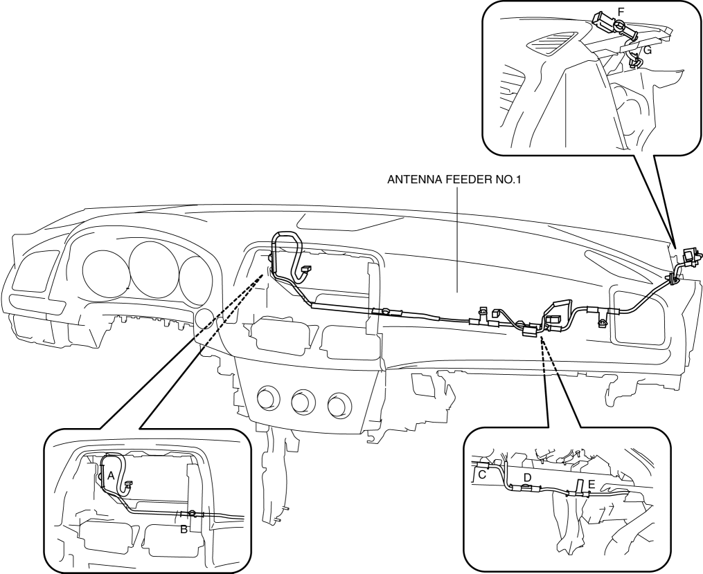
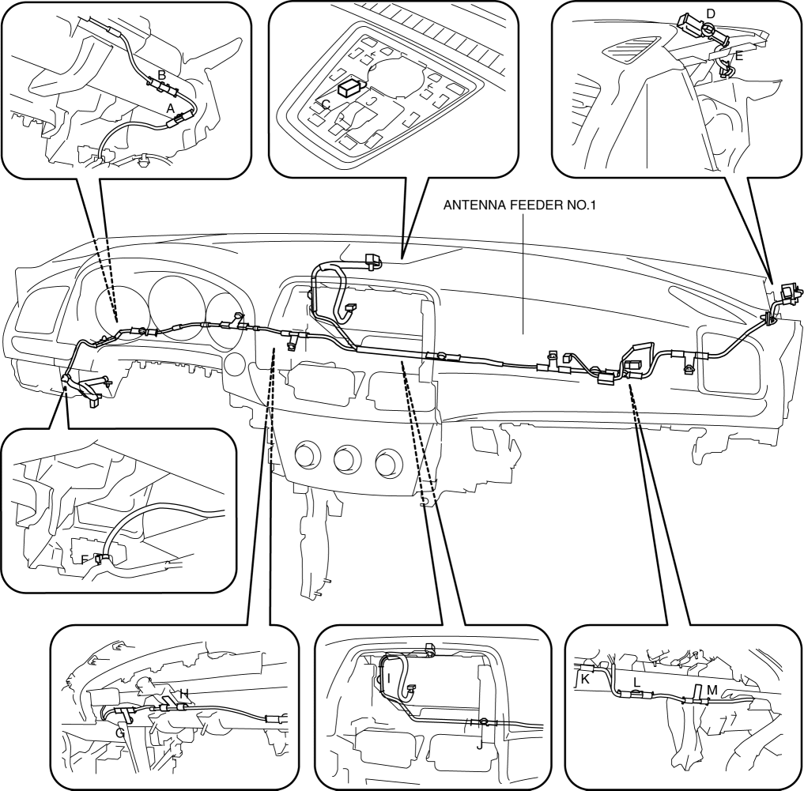

< Previous
Next >
2014 -
Mazda6 -
Body and Accessories
ANTENNA FEEDER NO.1 REMOVAL/INSTALLATION
With Audio System
1. Disconnect the negative battery cable. (See NEGATIVE BATTERY CABLE DISCONNECTION/CONNECTION [SKYACTIV-G 2.5].)
2. Remove the following parts: a. A-pillar trim (See A-PILLAR TRIM REMOVAL/INSTALLATION.)
b. Passenger-side front scuff plate (See FRONT SCUFF PLATE REMOVAL/INSTALLATION.)
c. Passenger-side front side trim (See FRONT SIDE TRIM REMOVAL/INSTALLATION.)
d. Glove compartment (See GLOVE COMPARTMENT REMOVAL/INSTALLATION.)
e. Dashboard under cover (See DASHBOARD UNDER COVER REMOVAL/INSTALLATION.)
f. Decoration panel (See DECORATION PANEL REMOVAL/INSTALLATION.)
g. Passenger-side lower panel (See LOWER PANEL REMOVAL/INSTALLATION.)
h. Blower unit (See BLOWER UNIT REMOVAL/INSTALLATION.)
i. Center panel (See CENTER PANEL REMOVAL/INSTALLATION.)
j. Audio unit (See AUDIO UNIT REMOVAL/INSTALLATION.)
3. Remove clips A, B, C, D, E, F and G.

4. Remove antenna feeder No.1.
5. Install in the reverse order of removal.
With Car-navigation System
1. Disconnect the negative battery cable. (See NEGATIVE BATTERY CABLE DISCONNECTION/CONNECTION [SKYACTIV-G 2.5].)
2. Remove the following parts: a. Center speaker grille (See SPEAKER GRILLE REMOVAL/INSTALLATION.)
b. Front center speaker (with Bose®)/front center speaker dummy (without Bose®) (See FRONT CENTER SPEAKER REMOVAL/INSTALLATION.)
c. GPS antenna (See GLOBAL POSITIONING SYSTEM (GPS) ANTENNA REMOVAL/INSTALLATION.)
d. A-pillar trim (See A-PILLAR TRIM REMOVAL/INSTALLATION.)
e. Front scuff plate (See FRONT SCUFF PLATE REMOVAL/INSTALLATION.)
f. Front side trim (See FRONT SIDE TRIM REMOVAL/INSTALLATION.)
g. Pocket lid (See LOWER PANEL REMOVAL/INSTALLATION.)
h. Car-navigation unit (See CAR-NAVIGATION UNIT REMOVAL/INSTALLATION.)
i. Cluster switch (See CLUSTER SWITCH REMOVAL/INSTALLATION.)
j. Upper panel (See UPPER PANEL REMOVAL/INSTALLATION.)
k. Rear console (See REAR CONSOLE REMOVAL/INSTALLATION.)
l. Shift lever knob (MTX) (See MANUAL TRANSAXLE SHIFT MECHANISM REMOVAL/INSTALLATION [C66M-R].)
m. Shift panel (See SHIFT PANEL REMOVAL/INSTALLATION.)
n. Front console box (See FRONT CONSOLE BOX REMOVAL/INSTALLATION.)
o. Side wall (See SIDE WALL REMOVAL/INSTALLATION.)
p. Front console (See FRONT CONSOLE REMOVAL/INSTALLATION.)
q. Hood release lever (See HOOD LATCH AND RELEASE LEVER REMOVAL/INSTALLATION.)
r. Fuel-filler lid opener lever (See FUEL-FILLER LID OPENER AND LEVER REMOVAL/INSTALLATION.)
s. Driver-side lower panel (See LOWER PANEL REMOVAL/INSTALLATION.)
t. Glove compartment (See GLOVE COMPARTMENT REMOVAL/INSTALLATION.)
u. Passenger-side lower panel (See LOWER PANEL REMOVAL/INSTALLATION.)
v. Blower unit (See BLOWER UNIT REMOVAL/INSTALLATION.)
w. Decoration panel (See DECORATION PANEL REMOVAL/INSTALLATION.)
x. Center panel (See CENTER PANEL REMOVAL/INSTALLATION.)
y. Audio unit (See AUDIO UNIT REMOVAL/INSTALLATION.)
3. Remove clips A, B, C, D, E, F, G, H, I, J, K, L and M.

4. Remove antenna feeder No.1.
5. Install in the reverse order of removal.
< Previous
Next >
© 2012 Mazda North American Operations, U.S.A.